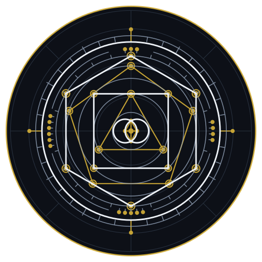

Elementarium¶

Passive optical archive and zero-context geometric bootstrap architecture for 100,000-year knowledge preservation.
geometor.elementarium is the deep-time preservation codex of the interconnected GEOMETOR semantic digital archive. It addresses deep-time preservation across a \(10^5\)-year horizon by encoding foundational deductive, metrological, scientific, and computational knowledge directly into passive fused silica (\(\text{SiO}_2\)), requiring nothing to initiate readout except a beam of light and a projection surface.
Core Engineering Principles¶
Concentric Optical Escalation: A monolithic or modular stack of fused-silica plates encodes four progressive optical regimes—from raw uncollimated shadow projection (
T0), to collimated lithographic reticles (T1), to crossed Brewster-angle birefringence (T2), to combinatorial Vernier and cold-boot symbolic frames (T3). Each stratum visually instructs the observer how to align or construct the optical instrument required to read the next.Constructive Geometry Before Language: Rather than opening with arbitrary alphabets or isolated prime sequences, the Elementarium establishes equivalence, implication, invariance, ratio, and proof directly from Euclid I.1 (the Vesica Piscis), Rational Trigonometry (\(Q\), \(s\)), and golden-section proportion (\(\phi\)).
Substrate-Anchored Metrology: Fused quartz (\(\text{SiO}_2\)) acts simultaneously as archival medium, optical element, and physical standard—anchoring unit length, refractive dispersion (\(n_D = \frac{2917}{2000}\)), and exact Brewster polarization spread (\(s_B = \frac{n_D^2}{1 + n_D^2}\)) in immutable mineral physics.
Mark I Desktop Prototype: Phase 1 brings the architecture onto the optical bench as a compact, unpowered
50 mm × 50 mmfused-silica reticle assembly verifying end-to-end human and camera cold-boot recovery.